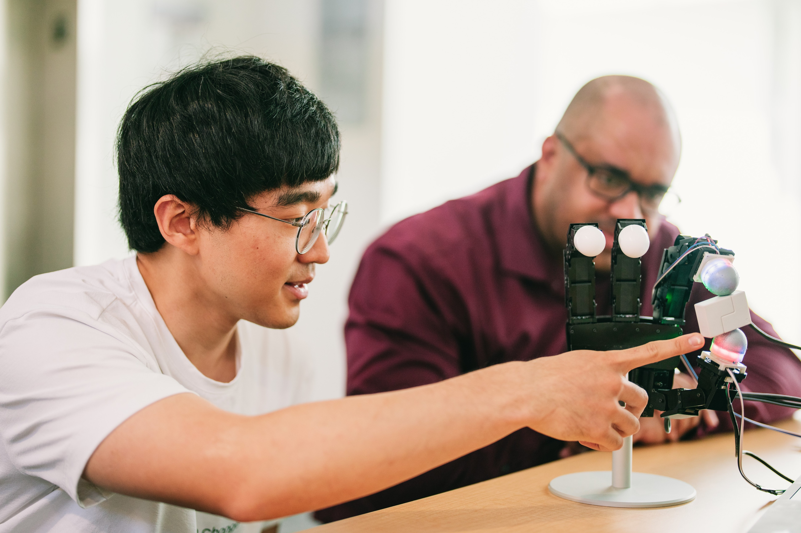
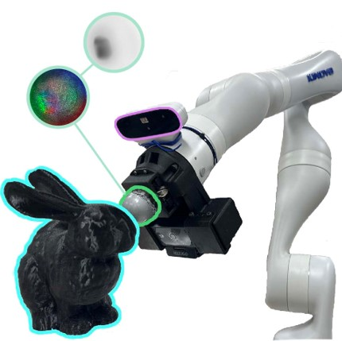
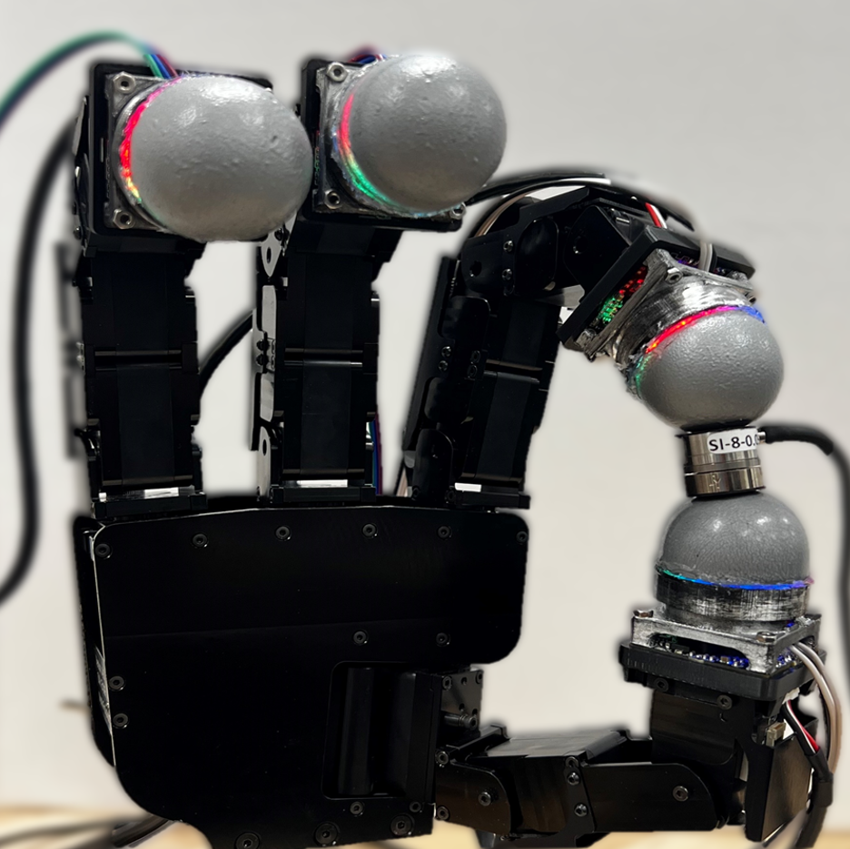
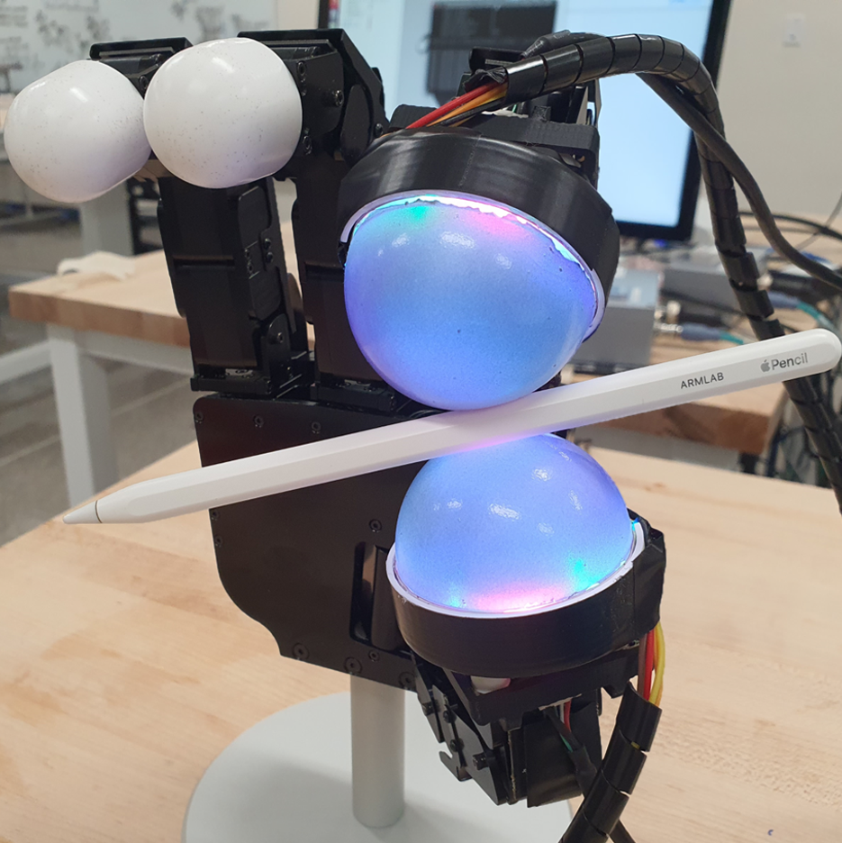
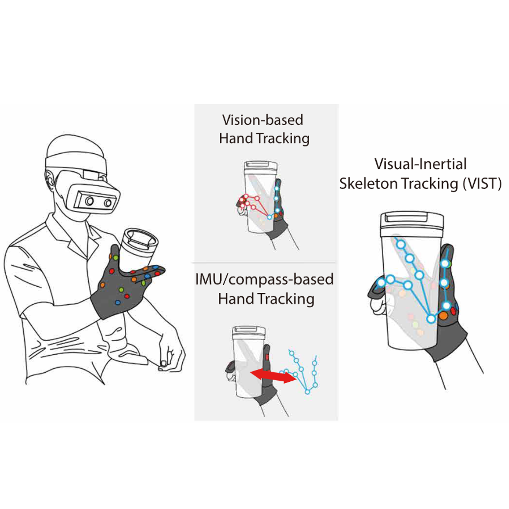
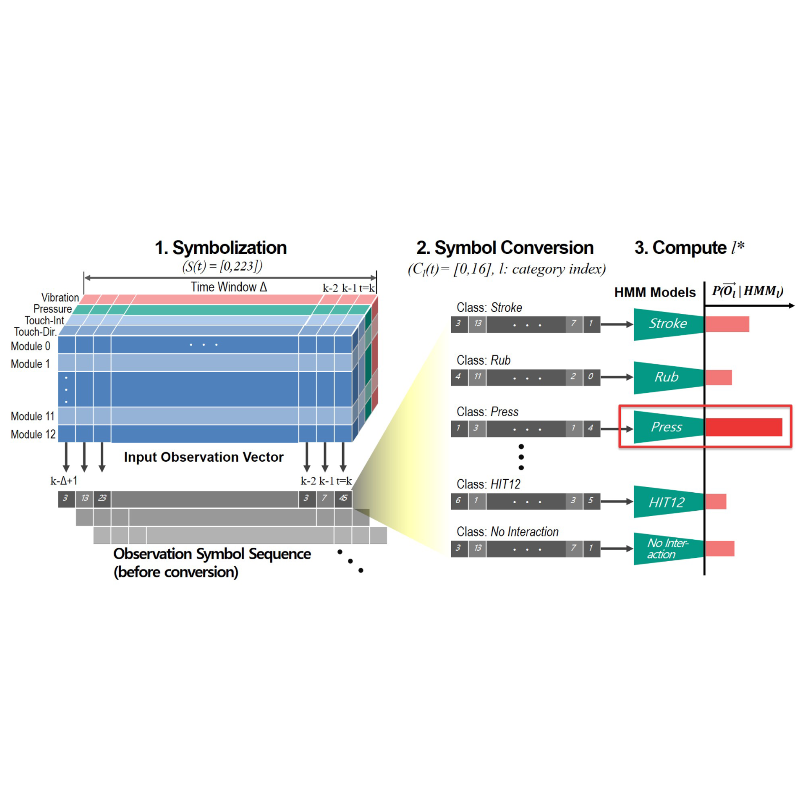
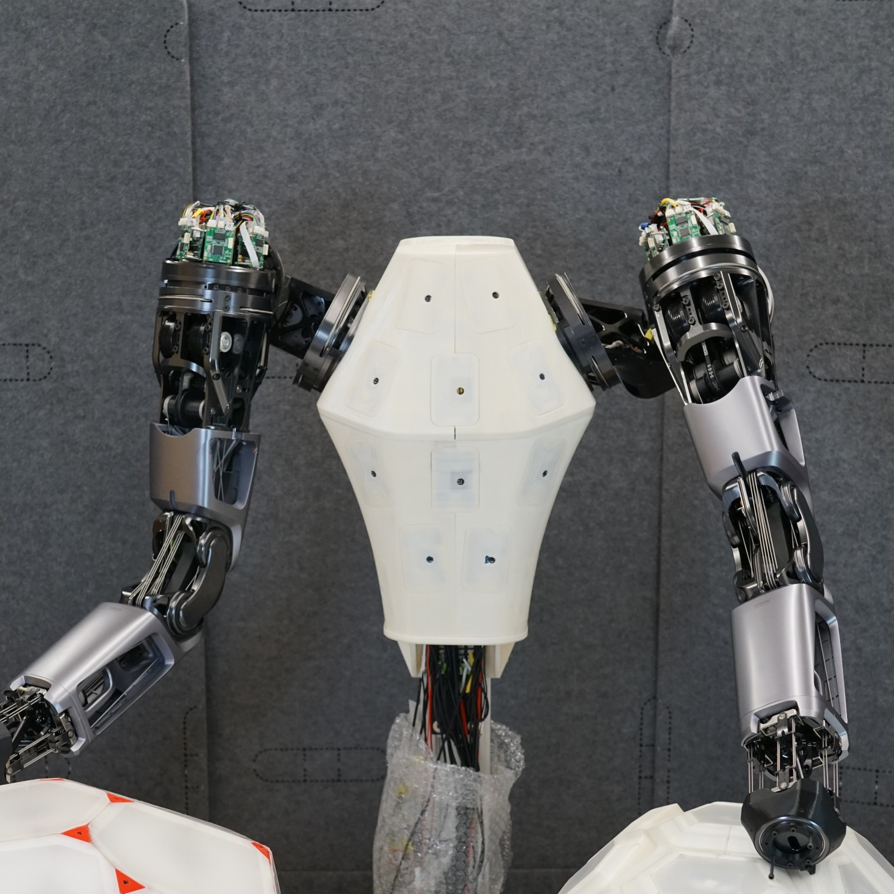
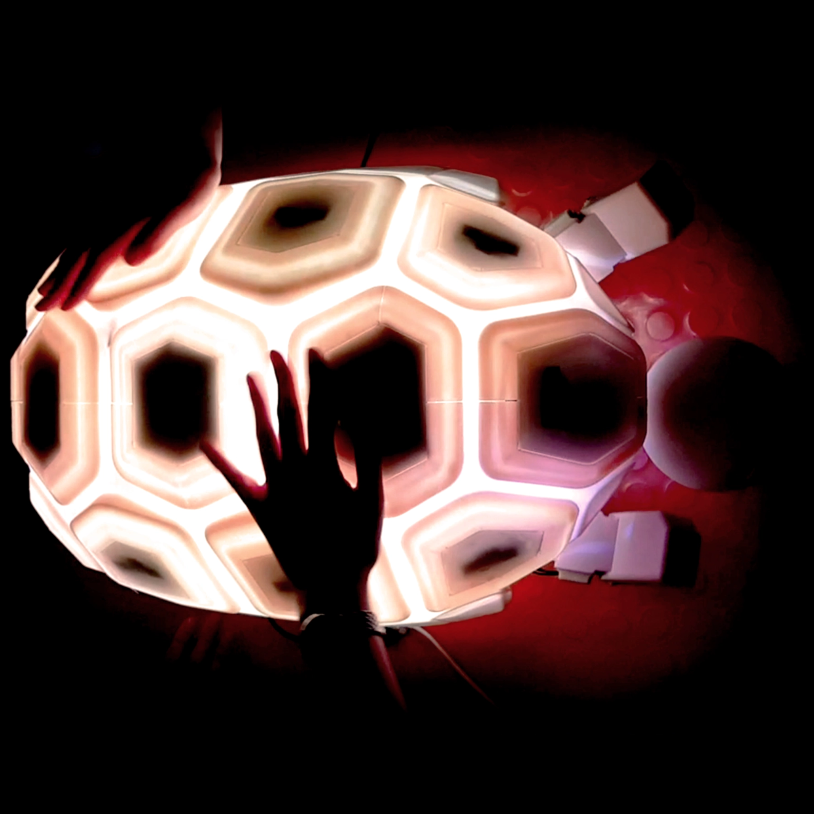
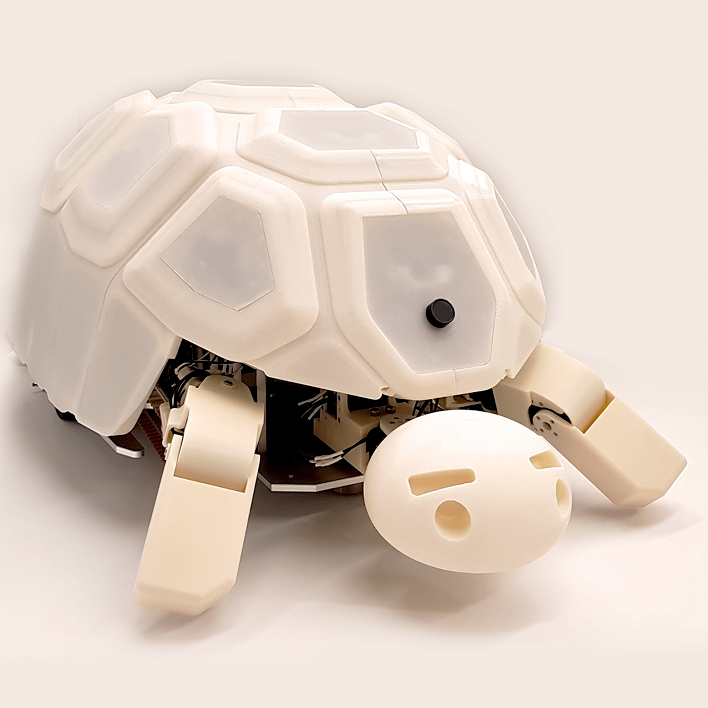

|
Won Kyung Do (도원경, 都源京) I'm a fifth-year Ph.D. Candidate in Mechanical Engineering at Stanford University. I am advised by Prof. Monroe Kennedy III in ARM Lab. Before coming to Stanford, I received B.S. in Mechanical Engineering from Seoul National University, advised by Prof. Dongjun Lee. I was fortunate to work as a research intern at Naver Labs in 2018. |
 |
{kind=link}
ResearchI'm interested in tactile sensing, dexterous manipulation, small object handling, control theory, optimization, and human-robot interaction. I believe improving dexterity of the robots is essential for enabling them to perform precise tasks such as manipulating small objects autonomously. Representative papers are highlighted. |
|
|
DenseTact-Mini: An Optical Tactile Sensor for Grasping Multi-Scale Objects From Flat Surfaces
Won Kyung Do, Ankush Dhawan, Mathilda Kitzmann, Monroe Kennedy III ICRA (accepted), 2024 (Best Paper Award Finalist in Robot Manipulation) project page / arXiv / video / github Developed a novel optical tactile sensor that can grasp multi-scale objects from flat surfaces (from 1mm basil seeds and small paperclips to items nearly 15mm). |

|
Embedded object detection and mapping in soft materials using optical tactile sensing
Jose A. Solano-Castellanos Won Kyung Do, Monroe Kennedy III SN Computer Science 5 (4), 1-11, 2024 project page / video / DOI Describes a method that uses optical tactile sensing for efficient detection and mapping of objects embedded in soft materials, demonstrated with quartz beads beneath polyethylene foam. |
|

|
Touch-GS: Visual-Tactile Supervised 3D Gaussian Splatting
Aiden Swann*, Matthew Strong*, Won Kyung Do, Gadiel Sznaier Camps, Mac Schwager, Monroe Kennedy III IROS (submitted), 2024 project page / arXiv / Video / Github Presents a novel method that enhances 3D Gaussian Splatting with optical tactile sensors for more accurate object representation in robotics, integrating tactile data with monocular depth images and a new variance-weighted loss function for improved scene synthesis across various materials. |

|
Inter-finger Small Object Manipulation with DenseTact Optical Tactile Sensor
Won Kyung Do, Bianca Aumann, Camille Chungyoun, Monroe Kennedy III R-AL, 2023 project page / DOI / Video / Github Introduces a tactile sensor-equipped gripper with DenseTact 2.0, enhancing precision and success in grasping small objects in cluttered environments, integrated with a specialized control algorithm and dataset for effective object classification and manipulation. |
|

|
DenseTact 2.0: Optical tactile sensor for shape and force reconstruction
Won Kyung Do, Bianca Aumann, Monroe Kennedy III ICRA, 2023 DOI / Video Designed DenseTact 2.0, an advanced optical-tactile sensor that accurately reconstructs shapes and measures forces in robotic fingertips with smaller form factors and higher resolution than previous models. |
|

|
Densetact: Optical tactile sensor for dense shape reconstruction
Won Kyung Do, Monroe Kennedy III ICRA, 2022 DOI / Video / Featured in : Stanford Engineering Introduces Densetact, a cost-effective, high-resolution tactile sensor that uses a fisheye camera and deep neural networks for precise 3D surface modeling in real-time. |
|

|
Visual-inertial hand motion tracking with robustness against occlusion, interference, and contact
Yongseok Lee, Won Kyung Do, Hanbyeol Yoon, Jinuk Heo, WonHa Lee, Daniel Watson, Science Robotics, 2020 DOI / Featured in : Seoul National University Press and ETNews Integrates sensor gloves and stereo cameras with a fusion algorithm for precise and reliable hand tracking, improving performance in real-world applications despite challenges like occlusions and electromagnetic interference. |
|


|
Online social touch pattern recognition with multi-modal-sensing modular tactile interface
HyunJin Ku*, Jason J. Choi*, Sunho Jang*, Won Kyung Do*, Soomin Lee, Sangok Seok UR (International Conference on Ubiquitous Robots), 2019 DOI Introduces a framework combining multi-modal tactile sensing and modular design with a classifier for recognizing social touch patterns, achieving up to 88.86% accuracy using methods like HMM, LSTM, and 3D-CNN. |
 |
Designing shelly, a robot capable of assessing and restraining children's robot abusing behaviors
HyunJin Ku*, Jason J. Choi*, Soomin Lee*, Sunho Jang*, Won Kyung Do* HRI (Late Breaking Report), 2018 DOI Showed that the robot Shelly effectively reduces children's robot abusing while maintaining their engagement with the robot. |
|  |
Shelly, a tortoise-like robot for one-to-many interaction with children
HyunJin Ku*, Jason J. Choi*, Soomin Lee*, Sunho Jang*, Won Kyung Do* HRI (Student Design Competition), 2018 (1st Prize on Student Design Competition) DOI / Video Featured in : IEEE Spectrum, TechCrunch, NBC News-Mach, Fast Company-Co.Design, Seoul National University Press, and HRI Designed "Shelly", a tortoise-like robot that engages with children while mitigating abusive behaviors towards robots. |
Service |
|
Reviewer in R-AL,
ICRA,
IROS,
CASE, and
Sensors
|
|
Template taken from here. |